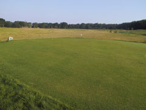

<div class="pages">
  <div data-page="hul11" class="page navbar-fixed toolbar-fixed" >
    <div class="navbar">
      <div class="navbar-inner">
        <div class="left">
          <a href="#" class="link back icon-only"><i class="icon icon-back"></i></a>
          <!-- <a href="#" class="back link icon-only"><i class="icon icon-back"></i></a> -->
        </div>
        <div class="center">Hul 11</div>
        <!-- <div class="right"></div> -->
        <div class="right">
        </div>
      </div>
    </div>
    <div class="page-content" style="padding-top:45px;">
       <div class="content-block">
          <center></center>
          <p>Du er nu nået til det femte og sidste par 4 hul i Perlerækken.</p>
          <center></center>
          <p>God plads til udslaget, men den opadskrånende fairway i landingsområdet kan tage en del længde af selv gode slag. Indspillet til den relativt store green skal være præcist for ikke at havne i en de 3 bunkere som omkranserog beskytter green.</p>
          <p>Alt for lange indspil trues af out of bounds bag green. Green er måske den sværeste at læse korrekt, så giv dig god til til putningen.</p>
          <p>For lav-handicapperen tilrådes et langt drive med et svagt draw og gerne med mindst 200 meters carry, så bakken ikke forkorter dit slag. Placér dit drive i højre side af fairway, da dette både vil tage de to bunkere i venstre side af fairway ud af spil samt give den bedste vinkel for indspil i greenens længderetning. Søen til højre for fairway vil kun være i spil for virkelig skæve, lange drives.</p>
          <p>Hulsponsor: <br />
          <br /><br />
          Bænksponsor:<br />
           
          </p>
        </div>
    </div>
    </div>
    </div>
  </div>
</div>
